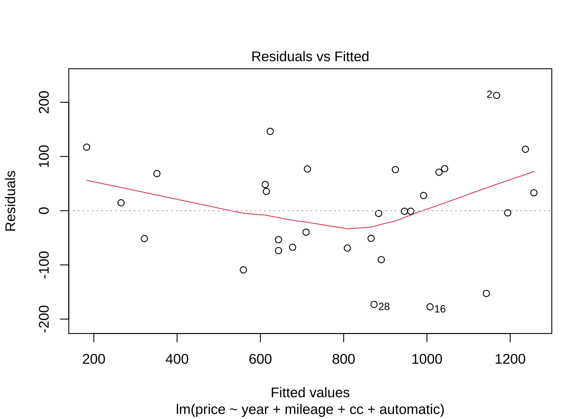
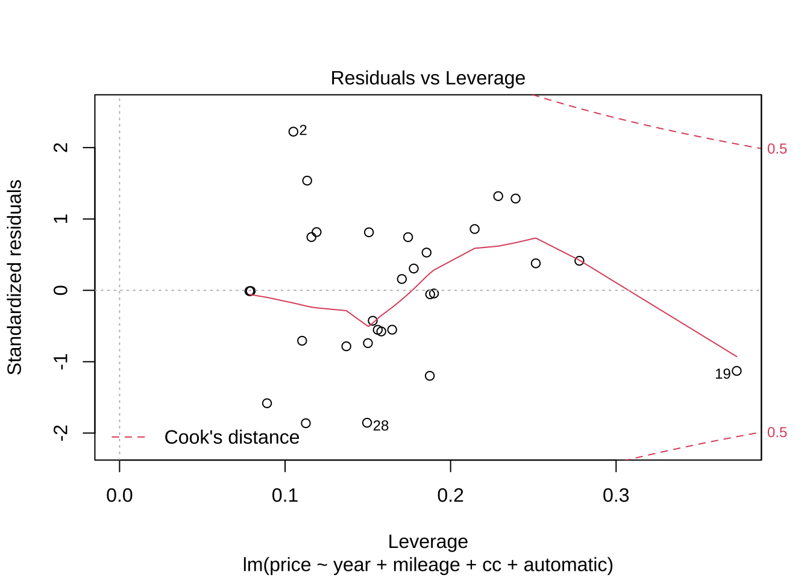

제 5 장 자료에 대한 진단
5.1 잔차 그림
회귀 분석에서 이상점과 영향점에 대한 분석을 할 때 여러 가지 잔차 그림(residual plot)은 매우 유용하다.
Studentized 잔차 \(r_i^*\) 와 예측값 \(\hat y_i\) 그림 (residual vs. fitted value)
Studentized 잔차 \(r_i^*\) 와 독립변수 값 \(x_{ji}\) 그림 (residual vs. predictor)
5.1.1 부분회귀그림 (Partial regression plot; added variable plot)
하나의 독립변수 \(x_j\)와 종속변수 \(y\)의 관계를 다른 독립변수의 영향을 제거하고 검토하는 그림이다.
다음과 같이 독립변수 \(x_j\)를 제외한 \(y\)에 대한 회귀식을 고려하고
\[ y_i=\beta_0 + \beta_1 x_{i1} + \beta_2 x_{i2} + \dots + \beta_{j-1} x_{i,j-1 } +\beta_{j+1} x_{i,j+1}+ \beta_{p-1} x_{i, p-1} + e_i \]
그 잔차를 \(r_{y| {\bm X}_{-j}}\) 라고 하자. 또한 설명변수 \(x_j\)를 반응변수로 하는 대한 회귀식을 고려하고
\[ x_{ij}=\beta'_0 + \beta'_1 x_{i1} + \beta'_2 x_{i2} + \dots + \beta'_{j-1} x_{i,j-1} +\beta'_{j+1} x_{i,j+1}+ \beta'_{p-1} x_{i,p-1} + e'_i \]
그 잔차를 \(r_{x_j|\bm X_{-j}}\)라고 하자. 위에서 구한 두 잔차 \(r_{y|\bm X_{-j}}\)과 \(r_{x_j|\bm X_{-j}}\)에 대한 그림을 부분회귀그림이라고 하며 만약에 설명변수 \(x_j\)가 유의하면 두 잔차의 관계는 다음과 같다.
\[ r_{y|\bm X_{-j}} = \beta_j r_{x_j|\bm X_{-j}} + e \]
5.2 자료 usedcars 에 대한 잔차 분석 (예제 3.8, 예제 5.3)
usedcars.lm <- lm(price ~ year + mileage + cc + automatic, usedcars)
summary(usedcars.lm)##
## Call:
## lm(formula = price ~ year + mileage + cc + automatic, data = usedcars)
##
## Residuals:
## Min 1Q Median 3Q Max
## -177.35 -63.91 -0.99 70.34 212.69
##
## Coefficients:
## Estimate Std. Error t value Pr(>|t|)
## (Intercept) 5.253e+02 3.998e+02 1.314 0.200823
## year -5.800e+00 9.283e-01 -6.247 1.55e-06 ***
## mileage -2.263e-03 7.211e-04 -3.138 0.004324 **
## cc 3.888e-01 2.022e-01 1.923 0.065958 .
## automatic 1.653e+02 3.986e+01 4.147 0.000339 ***
## ---
## Signif. codes: 0 '***' 0.001 '**' 0.01 '*' 0.05 '.' 0.1 ' ' 1
##
## Residual standard error: 101.1 on 25 degrees of freedom
## Multiple R-squared: 0.9045, Adjusted R-squared: 0.8892
## F-statistic: 59.21 on 4 and 25 DF, p-value: 2.184e-125.2.1 잔차그림
plot(usedcars.lm)
5.2.2 잔차
resid_inter <- rstandard(usedcars.lm) # internal studentized residual
resid_exter <- rstudent(usedcars.lm) # external studentized residual
hatval <- hatvalues(usedcars.lm) # leverage
data.frame(resid_inter , resid_exter, hatval)## resid_inter resid_exter hatval
## 1 0.859118727 0.854468915 0.21455013
## 2 2.223678962 2.432560486 0.10501551
## 3 -0.553417436 -0.545588388 0.15599165
## 4 -0.044084943 -0.043195925 0.18996253
## 5 -0.576180936 -0.568325835 0.15814304
## 6 0.816421059 0.810807796 0.11903880
## 7 -0.551399974 -0.543574935 0.16470220
## 8 -1.198080391 -1.209098031 0.18743332
## 9 0.378399054 0.371820157 0.25147525
## 10 0.745189938 0.738380670 0.17431785
## 11 -0.010873657 -0.010653990 0.07847932
## 12 1.537452127 1.583088042 0.11334881
## 13 -0.706665346 -0.699408397 0.11029244
## 14 1.286252868 1.304157036 0.23928783
## 15 0.305838319 0.300221293 0.17774944
## 16 -1.862061057 -1.965848316 0.11253640
## 17 -0.425962246 -0.418878889 0.15297508
## 18 -1.582023043 -1.634007936 0.08908012
## 19 -1.128902196 -1.135412108 0.37287989
## 20 0.746526192 0.739734875 0.11591279
## 21 -0.739861832 -0.732982630 0.15005336
## 22 -0.783820912 -0.777598695 0.13701582
## 23 0.529387292 0.521623446 0.18549015
## 24 1.320232140 1.341155689 0.22878139
## 25 -0.009531759 -0.009339195 0.07924745
## 26 0.414031097 0.407063963 0.27781733
## 27 0.813419294 0.807745473 0.15066704
## 28 -1.855054061 -1.957267375 0.14953912
## 29 0.158642701 0.155515766 0.17056129
## 30 -0.055408868 -0.054292716 0.187654665.2.3 영향점 측도
# DFBETAS for each model variable, DFFITS, covariance ratios,
# Cook's distances and the diagonal elements of the hat matrix
# Cases which are influential with respect to any of these measures
# are marked with an asterisk.
influence.measures(usedcars.lm)## Influence measures of
## lm(formula = price ~ year + mileage + cc + automatic, data = usedcars) :
##
## dfb.1_ dfb.year dfb.milg dfb.cc dfb.atmt dffit cov.r cook.d hat inf
## 1 -0.20716 -0.108544 0.327125 0.17932 0.19256 0.44658 1.344 4.03e-02 0.2146
## 2 -0.18773 0.033416 -0.347354 0.24746 0.23435 0.83326 0.455 1.16e-01 0.1050
## 3 -0.10302 -0.086990 0.008925 0.10950 0.06372 -0.23455 1.366 1.13e-02 0.1560
## 4 0.00469 0.016237 -0.011729 -0.00589 -0.00320 -0.02092 1.513 9.12e-05 0.1900
## 5 0.11228 0.102465 -0.135083 -0.12498 0.13462 -0.24632 1.363 1.25e-02 0.1581
## 6 -0.07885 0.136480 -0.181209 0.08714 0.11239 0.29805 1.216 1.80e-02 0.1190
## 7 -0.14228 0.100579 -0.106201 0.14682 -0.10174 -0.24137 1.381 1.20e-02 0.1647
## 8 -0.27687 0.308498 -0.320654 0.25704 0.24993 -0.58070 1.123 6.62e-02 0.1874
## 9 0.15471 -0.066016 -0.054370 -0.13883 0.03146 0.21551 1.592 9.62e-03 0.2515
## 10 0.13093 -0.056206 0.169173 -0.13765 -0.10220 0.33927 1.328 2.34e-02 0.1743
## 11 0.00143 -0.000670 0.000312 -0.00142 -0.00166 -0.00311 1.331 2.01e-06 0.0785
## 12 -0.27881 0.085189 -0.022194 0.31082 -0.33867 0.56603 0.842 6.04e-02 0.1133
## 13 0.10909 -0.027792 0.028700 -0.12774 0.15983 -0.24625 1.246 1.24e-02 0.1103
## 14 0.52930 -0.229975 -0.166587 -0.47750 0.11713 0.73144 1.145 1.04e-01 0.2393
## 15 -0.02434 -0.037299 -0.032166 0.04432 -0.10023 0.13959 1.464 4.04e-03 0.1777
## 16 -0.47183 0.092199 0.101866 0.45460 -0.29124 -0.70004 0.655 8.79e-02 0.1125
## 17 0.08120 -0.112348 0.030779 -0.06848 -0.09956 -0.17801 1.396 6.55e-03 0.1530
## 18 0.14607 0.138551 0.019412 -0.18052 -0.15882 -0.51098 0.795 4.90e-02 0.0891
## 19 0.08767 -0.454297 0.733107 -0.15988 0.36621 -0.87551 1.505 1.52e-01 0.3729
## 20 0.17302 -0.084980 0.007572 -0.16482 0.10281 0.26785 1.239 1.46e-02 0.1159
## 21 0.14757 0.081228 -0.204480 -0.13332 -0.13993 -0.30798 1.292 1.93e-02 0.1501
## 22 -0.21369 -0.011866 0.084126 0.19253 0.16353 -0.30984 1.255 1.95e-02 0.1370
## 23 -0.12798 0.071546 0.083597 0.10512 0.13711 0.24893 1.423 1.28e-02 0.1855
## 24 0.22299 0.430646 -0.103308 -0.26300 -0.09994 0.73047 1.108 1.03e-01 0.2288
## 25 0.00129 0.000354 -0.000686 -0.00128 -0.00137 -0.00274 1.332 1.56e-06 0.0792
## 26 0.06915 0.204983 -0.141142 -0.08585 0.12561 0.25248 1.641 1.32e-02 0.2778 *
## 27 -0.08134 -0.093035 -0.048156 0.12751 -0.25004 0.34021 1.263 2.35e-02 0.1507
## 28 0.28532 -0.571184 0.447521 -0.26551 -0.37866 -0.82073 0.688 1.21e-01 0.1495
## 29 0.02625 0.019365 0.010861 -0.02922 -0.01619 0.07052 1.471 1.04e-03 0.1706
## 30 0.00732 0.016726 -0.010214 -0.01018 0.01709 -0.02609 1.509 1.42e-04 0.18775.2.4 부분회귀그림
#added variable plot
avPlots(usedcars.lm)5.3 자료 houseprice 에 대한 잔차 분석 (연습문제 5.9)
price: 주택 판매가격(천만원)tax: 세금(만원)ground: 대지평수(평)floor: 건물평수(평)year: 주택연령(년)
house.lm <- lm(price ~ tax + ground + floor + year, houseprice)
summary(house.lm )##
## Call:
## lm(formula = price ~ tax + ground + floor + year, data = houseprice)
##
## Residuals:
## Min 1Q Median 3Q Max
## -3.4891 -1.3574 0.1337 1.0686 3.4938
##
## Coefficients:
## Estimate Std. Error t value Pr(>|t|)
## (Intercept) 1.21874 2.04661 0.595 0.55759
## tax 0.05195 0.01383 3.756 0.00109 **
## ground 0.01159 0.02534 0.458 0.65169
## floor 0.34941 0.07268 4.807 8.41e-05 ***
## year -0.21894 0.33149 -0.660 0.51582
## ---
## Signif. codes: 0 '***' 0.001 '**' 0.01 '*' 0.05 '.' 0.1 ' ' 1
##
## Residual standard error: 2.039 on 22 degrees of freedom
## Multiple R-squared: 0.9313, Adjusted R-squared: 0.9188
## F-statistic: 74.53 on 4 and 22 DF, p-value: 1.817e-125.3.1 잔차그림
plot(house.lm)5.3.2 잔차
resid_inter <- rstandard(house.lm) # internal studentized residual
resid_exter <- rstudent(house.lm) # external studentized residual
hatval <- hatvalues(house.lm) # leverage
data.frame(resid_inter , resid_exter, hatval)## resid_inter resid_exter hatval
## 1 0.08485161 0.08291431 0.09320631
## 2 -0.67688158 -0.66831473 0.21913894
## 3 0.22562538 0.22069338 0.19724713
## 4 -0.46948020 -0.46100124 0.11507835
## 5 0.52919554 0.52035100 0.06445355
## 6 1.84331217 1.95851264 0.13574846
## 7 -0.06384170 -0.06237966 0.09690865
## 8 -1.99395355 -2.15227270 0.26336419
## 9 0.83013951 0.82406251 0.58244898
## 10 1.91549041 2.05020730 0.38378669
## 11 1.05080043 1.05341670 0.06658106
## 12 -0.94527321 -0.94288627 0.18220181
## 13 0.50227319 0.49356319 0.10480032
## 14 0.06861447 0.06704409 0.08643549
## 15 0.93871235 0.93606793 0.08186844
## 16 -1.29008121 -1.31098352 0.12001347
## 17 1.06516817 1.06859785 0.10343469
## 18 0.45890058 0.45051112 0.12193265
## 19 0.23755461 0.23239110 0.10805628
## 20 1.38973242 1.42161443 0.04635041
## 21 -1.09213214 -1.09717908 0.27411620
## 22 -0.50097821 -0.49227596 0.26244274
## 23 0.02037349 0.01990526 0.09076853
## 24 -1.56186889 -1.61831671 0.18011950
## 25 -1.49330686 -1.53905802 0.27174557
## 26 -0.39509397 -0.38738692 0.05564326
## 27 -1.32177835 -1.34593675 0.692108335.3.3 영향점 측도
# DFBETAS for each model variable, DFFITS, covariance ratios,
# Cook's distances and the diagonal elements of the hat matrix
# Cases which are influential with respect to any of these measures
# are marked with an asterisk.
influence.measures(house.lm)## Influence measures of
## lm(formula = price ~ tax + ground + floor + year, data = houseprice) :
##
## dfb.1_ dfb.tax dfb.grnd dfb.flor dfb.year dffit cov.r cook.d hat inf
## 1 0.014217 0.002017 -0.01275 -0.00268 -0.000135 0.02658 1.389 1.48e-04 0.0932
## 2 0.042404 0.079930 0.14075 -0.15424 -0.158274 -0.35404 1.455 2.57e-02 0.2191
## 3 0.069922 -0.027157 -0.08571 0.04958 -0.034094 0.10940 1.554 2.50e-03 0.1972
## 4 -0.007662 0.042042 0.03758 -0.03751 -0.069086 -0.16624 1.356 5.73e-03 0.1151
## 5 0.063837 -0.019261 -0.03297 -0.00264 0.006118 0.13658 1.265 3.86e-03 0.0645
## 6 -0.054546 -0.098819 0.13310 -0.13410 0.454340 0.77620 0.631 1.07e-01 0.1357
## 7 0.006212 -0.003046 -0.00704 0.00782 -0.014422 -0.02043 1.396 8.75e-05 0.0969
## 8 -0.005790 0.732398 -1.01363 -0.05094 0.080104 -1.28691 0.632 2.84e-01 0.2634 *
## 9 -0.485623 0.145037 -0.28210 0.47003 0.181974 0.97327 2.578 1.92e-01 0.5824 *
## 10 -0.441587 -0.024860 0.39734 0.44403 -0.383840 1.61800 0.822 4.57e-01 0.3838 *
## 11 0.135462 -0.079420 0.10301 -0.05113 -0.073622 0.28134 1.045 1.58e-02 0.0666
## 12 -0.290579 0.312281 0.18500 -0.33279 0.268032 -0.44505 1.254 3.98e-02 0.1822
## 13 0.080276 0.061427 0.01756 -0.11076 -0.027110 0.16887 1.331 5.91e-03 0.1048
## 14 0.006784 -0.000403 0.01053 -0.01017 -0.001943 0.02062 1.380 8.91e-05 0.0864
## 15 0.028693 0.027810 0.05281 -0.12180 0.117515 0.27952 1.120 1.57e-02 0.0819
## 16 0.148557 -0.215769 0.20142 0.00669 -0.261136 -0.48414 0.968 4.54e-02 0.1200
## 17 0.246376 -0.173013 0.01794 0.10015 -0.265665 0.36296 1.080 2.62e-02 0.1034
## 18 0.103552 0.009435 0.01415 -0.03784 -0.110898 0.16788 1.370 5.85e-03 0.1219
## 19 0.014602 0.036836 0.02175 -0.04407 -0.019199 0.08089 1.397 1.37e-03 0.1081
## 20 0.091734 -0.009786 0.01097 -0.05796 0.042615 0.31341 0.836 1.88e-02 0.0464
## 21 -0.450615 0.123028 0.53573 -0.37690 0.450929 -0.67424 1.316 9.01e-02 0.2741
## 22 0.205044 -0.042537 -0.22449 0.10230 -0.199701 -0.29365 1.615 1.79e-02 0.2624
## 23 -0.000357 -0.003982 0.00133 0.00316 0.000992 0.00629 1.388 8.29e-06 0.0908
## 24 0.498955 -0.067078 -0.55352 0.21412 -0.497936 -0.75852 0.855 1.07e-01 0.1801
## 25 -0.628635 0.164535 -0.05777 -0.02051 0.792697 -0.94014 1.015 1.66e-01 0.2717
## 26 -0.002774 -0.019178 0.01071 -0.01033 0.016113 -0.09403 1.289 1.84e-03 0.0556
## 27 0.109605 -1.912785 0.46868 1.41138 -0.355827 -2.01796 2.710 7.85e-01 0.6921 *data.frame(influence.measures(house.lm)$infmat) %>% arrange(desc(cook.d))## dfb.1_ dfb.tax dfb.grnd dfb.flor dfb.year dffit cov.r cook.d hat
## 27 0.1096047217 -1.9127853141 0.468676877 1.411381453 -0.3558265703 -2.017960765 2.7098290 7.854588e-01 0.69210833
## 10 -0.4415870543 -0.0248604761 0.397338451 0.444034941 -0.3838396389 1.617995073 0.8224149 4.570343e-01 0.38378669
## 8 -0.0057902619 0.7323984486 -1.013634156 -0.050938912 0.0801037723 -1.286913158 0.6323020 2.842916e-01 0.26336419
## 9 -0.4856234858 0.1450371174 -0.282098491 0.470027818 0.1819741325 0.973272210 2.5775061 1.922563e-01 0.58244898
## 25 -0.6286351847 0.1645351185 -0.057767986 -0.020507197 0.7926966789 -0.940144619 1.0154477 1.664207e-01 0.27174557
## 24 0.4989545517 -0.0670775894 -0.553522590 0.214118018 -0.4979362714 -0.758522754 0.8551849 1.071838e-01 0.18011950
## 6 -0.0545461054 -0.0988187998 0.133102135 -0.134103045 0.4543397926 0.776200207 0.6310808 1.067389e-01 0.13574846
## 21 -0.4506145915 0.1230280032 0.535727211 -0.376896955 0.4509288359 -0.674235034 1.3155567 9.008406e-02 0.27411620
## 16 0.1485568463 -0.2157694362 0.201415137 0.006694886 -0.2611364532 -0.484143630 0.9676585 4.539605e-02 0.12001347
## 12 -0.2905789777 0.3122807716 0.185004213 -0.332794386 0.2680322860 -0.445053871 1.2541060 3.981541e-02 0.18220181
## 17 0.2463756161 -0.1730128116 0.017939895 0.100146357 -0.2656652976 0.362958055 1.0800825 2.617885e-02 0.10343469
## 2 0.0424037098 0.0799299689 0.140753289 -0.154237840 -0.1582742772 -0.354041305 1.4545976 2.571587e-02 0.21913894
## 20 0.0917343695 -0.0097856304 0.010973417 -0.057957406 0.0426148630 0.313410964 0.8358047 1.877401e-02 0.04635041
## 22 0.2050435817 -0.0425371361 -0.224492803 0.102295021 -0.1997011456 -0.293648675 1.6154977 1.786103e-02 0.26244274
## 11 0.1354618103 -0.0794200881 0.103010169 -0.051125306 -0.0736223445 0.281343734 1.0450182 1.575232e-02 0.06658106
## 15 0.0286930080 0.0278098038 0.052808877 -0.121803476 0.1175145249 0.279520178 1.1203321 1.571472e-02 0.08186844
## 13 0.0802759117 0.0614266653 0.017558647 -0.110759188 -0.0271098481 0.168874509 1.3306151 5.906805e-03 0.10480032
## 18 0.1035515927 0.0094345541 0.014153127 -0.037842744 -0.1108978787 0.167881022 1.3696294 5.848701e-03 0.12193265
## 4 -0.0076624989 0.0420420176 0.037576080 -0.037512885 -0.0690856639 -0.166244194 1.3559605 5.732622e-03 0.11507835
## 5 0.0638374271 -0.0192611164 -0.032971284 -0.002640161 0.0061177215 0.136580011 1.2651222 3.858725e-03 0.06445355
## 3 0.0699218586 -0.0271569355 -0.085706412 0.049581510 -0.0340940269 0.109396575 1.5538338 2.501697e-03 0.19724713
## 26 -0.0027742220 -0.0191783392 0.010712437 -0.010330051 0.0161132923 -0.094033628 1.2894913 1.839532e-03 0.05564326
## 19 0.0146019324 0.0368361881 0.021746080 -0.044073810 -0.0191988608 0.080886448 1.3966972 1.367318e-03 0.10805628
## 1 0.0142171388 0.0020173997 -0.012754491 -0.002679822 -0.0001347719 0.026582627 1.3893053 1.480086e-04 0.09320631
## 14 0.0067843423 -0.0004028513 0.010527346 -0.010173078 -0.0019433376 0.020622293 1.3797899 8.908700e-05 0.08643549
## 7 0.0062121502 -0.0030464468 -0.007037304 0.007822060 -0.0144221961 -0.020434236 1.3959920 8.747214e-05 0.09690865
## 23 -0.0003574067 -0.0039823274 0.001330353 0.003161260 0.0009924586 0.006289241 1.3877189 8.287463e-06 0.090768535.3.4 부분회귀그림
#added variable plot
avPlots(house.lm)